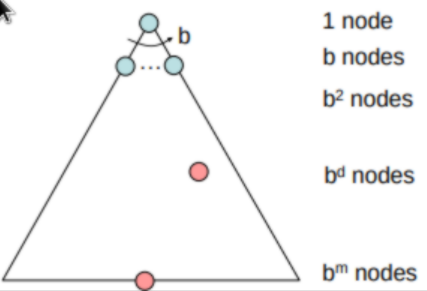

Artificial Intelligence
Table of Contents
1 AI Basics (Lec 1, 2)
1.1 Agents
- An agent is an entity that perceives and acts
- A rational agent selects actions that achieve the best (expected) outcome
- Reflex agents consider how the world is but do not consider future consequences of their actions
- Can sometimes be rational, although not always
- Planning agents consider how the world would be based upon their actions and have some goal
- Decisions are based on hypothesized consequences of actions
- Not always the best action so they’re note always rational
1.2 Searching
- In a Discrete Search Problem we are given:
- A finite state space
- A finite action space
- A cost function
- \(Cost=C(Action, State, FutureState)\)
- The cost of an action is defined as the cost of moving from a state to some future state through that action
- A transition model
- \(FutureState=Transition(Action, CurrentState)\)
- Start state and a goal state or goal test
- We seek to find a minimum cost solution solution: a sequence of actions that lead from the start to the goal
- We assume the cost of the solution is equal to the sum of the cost of each step
1.3 State Space Graphs vs Search Trees
- State Space Graphs
- The state space forms a directed graph where the nodes are states and the edges are actions
- Each state occurs only once
- Goal test is a set of nodes
- Rarely can build it in memory
- Search Trees
- Root has the start state
- Branches are actions
- The nodes show states but correspond to local PLANS
- Search trees can be expanded until the solution is found
- Leaf nodes are called the frontier or the open list
- Leaf nodes are nodes that have unexplored options
2 Uninformed Search (Lec 3)
2.1 Breadth First Search
- Expand shallowest node first
- Frontier is a FIFO queue
2.2 Depth First Search
- Always expand the deepest node first
- Frontier is a LIFO queue (stack)
2.3 Iterative Deepening
- Run DFS with depth limit 1
- Run DFS with depth limit 2
- Run DFS with depth limit …
- DFS space complexity with BFS time complexity
2.4 Uniform Cost Search
- Expand least-cost node first
- Frontier is a priority queue
- Issues
- Explores in all directions
- No goal-oriented expansion
2.5 Search Algorithm Evaluation
- Completeness - Does this always find a solution if one exists
- Optimal - Find the least cost solution
- Time complexity - Time taken
- Space complexity - Space needed
- Useful quantities
- \(b\) - branching factor of the tree (average number of successors for any node)
- \(m\) - Maximum depth of the state space (meaning there are at max \(b^m\) nodes)
- \(d\) - Depth of the shallowest goal node 
2.5.1 BFS Properties
- Time complexity \(\approx O(b^d)\)
- Space complexity \(\approx O(b^d)\)
- It is complete (if \(d\) is finite)
- It is optimal only if step costs are equal or increasing as we move down the tree
- BFS requires a crazy amount of memory and time
2.5.2 DFS Properties
- It is complete if \(m\) is finite and the graph is acyclic
- Not optimal
- Time complexity \(O(b^m)\) if \(m \ne \infty\) and terrible if \(m >> d\)
- Space complexity \(O(bm)\)
2.5.3 UCS properties
- It is optimal
- It is complete if the cost of every action is at least \(\epsilon > 0\)
- Time
- If \(C^*\) is the optimal cost the effective depth is \(\frac{C^*}{\epsilon}\)
- It takes \(O(b^{\frac{C^*}{\epsilon}})\) time and space
3 Informed Search (Lec 4 & 5)
- Informed Search Methods use problem specific knowledge to solve a problem better
- Idea: Use an evaluation function \(f(n)\) for each node \(n\)
- Estimate “desirability” of each node
- Open is a priority queue sorted by increasing $f$-cost
3.1 Search Heuristic
- A heuristic function \(h(n)\)
- Estimates how close the state at node \(n\) is to the goal state
- Designed for a particular search problem
- Common heuristics: Manhattan distance, Euclidean distance, etc.
3.2 Greedy Search
- Expand the node that appears to be closest to the goal at each step
- \(f(n)=h(n)\)
- Complete
- Not Optimal
- Time - \(O(b^m)\)
- Space - \(O(b^m)\)
3.3 A*
- Guide the search while avoid expanding expensive paths
- Eval function \(f(n) = g(n) + h(n)\)
- Admissible heuristics
- Never overestimate true cost of the goal
- Consistent heuristics
- \(h(n) <= c(n, a, n')+h(n')\)
- Where \(c\) is a step cost function
- All consistent heuristics are admissable
- Most of the work in A* lies on finding admissable heuristics
- We can often find these by solving a relaxed version of the problem
- The key idea is the optimal solution cost of the relaxed problem is no greater than the optimal solution cost of the real problem
- We can often find these by solving a relaxed version of the problem